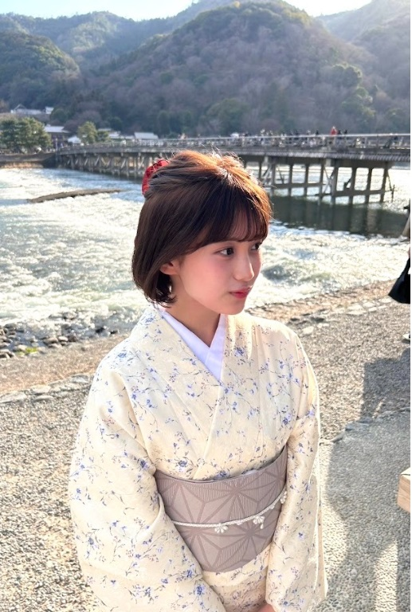

橘杏咲の立ち話もなんですから！ 第５回橘杏咲的“站着聊可说不完！” 第5回
こんにちは！橘杏咲です！
大家好！我是橘杏咲！
今月は12月！ついに2024年、ラストコラムになりますね。
这个月是12月！终于迎来2024年的最后一篇专栏了呢。
2024年の1年はとても濃密だったので例年に比べて時の流れが早かったように感じます。
2024年这一年过得非常充实紧凑，感觉时间比往年流逝得还要快。
毎月、月初めにもう◯月！？と言っていました笑😌
每个月月初我都在感叹“都已经×月了吗!?”（笑）😌
さて、今回のコラムは2024年ラスト回なので2024年の振り返りをしていきたいなと思います。
好啦，既然这一回是2024年的压轴篇，我想来好好回顾一下2024年。
1ヶ月ずつ振り返ってしまうとかなり長くなってしまいそうなので、3ヶ月ごとに分けて振り返っていきます➰🎶
如果按月回顾的话篇幅肯定会拉得很长，所以我就每三个月为一段来回顾吧➰🎶
1~3月
1～3月
2024年の始まりは、家族とのお出かけから始まりました！
2024年的开端，是从和家人一起出门游玩开始的！
この3ヶ月は1月前の学期末試験が終わってからの冬休みを満喫していましたねー！
这三个月里，在考完1月的期末考试后，我尽情享受了寒假时光呢！
3回旅行へ行き、イベントへ遊びに行き色々な人と会いました😸
去了3次旅行，还去参加了不少活动，见了各种各样的人😸
中でも香川旅行と京都旅行は印象深いですね。
其中，香川旅行和京都旅行尤其令我印象深刻。
京都旅行では、2泊3日で中高の友達と、美味しいものを食べ尽くしました。
京都之旅是和初高中的朋友一起去的三天两夜，我们把当地美食吃了个遍。
着物を着たり、お抹茶をいただいたり、ありとあらゆるお肉を食べたりしました🍖🍵🍡
穿了和服、喝了抹茶，还吃了各种各样美味的肉料理🍖🍵🍡
グループのアルバムに写真が溢れて余裕で2つめに突入していました笑
群聊相册里的照片多到溢出来，轻轻松松就开到第二个相册了（笑）。
あ！今アルバムを見ていたら思い出したのですが、2024年一発目のおみくじ、おみくじ番号1番の大吉だったんですよ！
啊！刚才翻相册时突然想起来，我2024年抽的第一支签，竟然是第1号的大吉哦！
そして京都で引いたおみくじもなんと番号1番の大吉…
而且在京都抽的签居然也是第1号的大吉……
2024年はいいことしかないんだ！！とスタートからテンション高かったのを覚えています。
我还记得当时从年初开始就兴奋不已，觉得“2024年肯定全都是好事!!”。
現に2024年はたくさんいいことがありましたよっ やっぱりおみくじパワー、つよし！💪🏻✨
事实上2024年也确实发生了好多好事！果然御神签的能量超强的！💪🏻✨
そして香川旅行。友人が香川にいるので、東京の友人と遊びに行きました。
再说香川旅行。因为我有朋友在香川，所以就和东京的朋友一起去玩了。
いやぁ、香川もとにかく食べ物が美味しい！！
哎呀，香川的食物也实在太好吃了!!
やはりなんと言ってもうどん。コシと弾力がすごくて…あまりにも美味しい！！
首当其冲的当然是乌冬面。筋道和弹性绝了……好吃到让人惊叹!!
私の語彙力が及ばずうまく表現できないのですが、麺そのものも本当に美味しいんです。
虽然受限于我的词汇量很难精准形容，但面条本身的味道就真的非常鲜美。
他にも甘味からお肉まで全てが美味しすぎました(;_;)🤍
除此之外，从甜点到肉类全都好吃到不行(;_;)🤍
食の話ばかりになってしまっている…。
一不小心全都在聊吃的了……
そういえば、私が以前声ラブ最終回の時にXに投稿したジャンプしている写真はこの香川旅行の際に父母ヶ浜で友達に撮ってもらった写真です。
说起来，我之前在《声ラブ！》最终回时发在 X 上的那张跳跃照片，就是这次香川旅行在父母之滨请朋友帮我拍的。
夕焼けの父母ヶ浜、綺麗だったなあ。
夕阳下的父母之滨真的好美啊。
空と浜辺の人の姿が水に反射する光景が本当に美しかったですね。
天空与海滩上行人的身影倒映在水面上的景象实在太迷人了。
わ〜！旅行のことをお話ししていたら旅行に行きたくなってきました！！
哇〜！一聊起旅行，我又好想去旅行了!!
今年の冬休みの予定はまだ立てていないので、そろそろ立てなきゃ！一回は旅行へ行けるといいな…
今年寒假的计划还没定下来，得抓紧安排了！希望能再去一次旅行呀……

京都の思い出写真を添えて👘♡
附上京都旅行的回忆照片👘♡
4~6月
4～6月
4月からは学年も新しくなり、「2年生は大学とお仕事の両立しっかり頑張って、どっちも楽しんでやる〜！！」と、思っていたのも束の間、履修登録大失敗…(/ _ ; )💧4月は履修登録をなんとか授業を埋めなければ！！とたくさんの教授に頭を下げて回りました。本当に履修登録は舐めちゃあかんです。
从4月开始升入新学年，刚想着“大二一定要好好兼顾大学和工作，两边都要玩得尽兴〜!!”，结果转眼选课登记就惨遭大翻车……(/ _ ; )💧 整个4月我为了把课表凑齐，四处找好多教授低头求情加课。选课真的绝对不能掉以轻心啊。
結局そこそこいい感じの時間割にすることはできたのですが、4月は本当に履修に悩まされた思い出ばかり残っています。
最后虽然勉强凑出了一张还算不错的课表，但4月留下的记忆几乎全都是被选课折磨的痛苦。
これからの履修登録は絶対に失敗しないんだから…
今后的选课我绝对不会再翻车了……
もちろん履修登録以外の思い出もありますよっ！！
当然除了选课之外，也有不少其他回忆哦!!
アルバムを見ていると声優仲間から中高の友達と色々な子達とたくさん遊んでいていいなぁ！と本人ながら微笑ましくなります(?)笑
翻看相册时，看到自己和声优伙伴还有初高中朋友们一起玩得那么开心，连我本人都忍不住露出姨母笑（？）哈哈。
また、アルバムを見ていて思い出したのですが、マブの結川あさきとお花見🌸に行ったんですよ。
还有，翻相册时想起来，我还和挚友结川麻希一起去赏樱🌸了呢。
この時おしゃれなVlogを撮ろう！と言って、可愛いお花見グッズやおもちゃやお菓子を用意して、動画を撮っていたのですが…。
当时我们说着“来拍一支时尚的 Vlog 吧！”，特地准备了可爱的赏花小物、玩具和小零食，兴致勃勃地开始录视频，结果……
公園、人が多すぎていい場所が見つからない事件、風が強すぎてボサボサ&葉っぱがコップに落ちてくる事件、買ってきた風船が爆発する事件、などなどたくさんの不運に見舞われました。
接连遭遇了公园人太多找不到好位置事件、风太大吹得头发乱糟糟且树叶掉进杯子里事件、买来的气球突然爆炸事件等等一连串倒霉事。
結果、「なんでこうなったんだろうね…」「なんか、お洒落じゃないね…」とボソボソ話すだけの可哀想な人たちになっていました。
结果我们俩沦落成了只能小声嘀咕“怎么会变成这样呢……”“感觉一点都不时尚呢……”的可怜人。
もちろん最高に楽しかったんですよ！！この残念な感じが私たちらしいね。となりました^_^👍🏻
当然整个过程还是超级开心的!! 我们还笑着说“这种略带狼狈的感觉才最像我们呢”^_^👍🏻
結局動画は編集されずにお蔵入りしてます。またいつかやろうね。あさき。
最后那段视频也没剪辑，直接压箱底了。以后找机会再拍一次吧，麻希。
そして！この頃、『春日さくら、伊駒ゆりえ、橘杏咲のパジャマナイト』が始まりました🎶🌙
还有！也是在这个时期，《春日樱、伊驹百合绘、橘杏咲的睡衣之夜》开播了🎶🌙
最初は緊張していましたが、今でこそまだ初対面から1年経っていないなんて考えられない！というくらい息ぴったりの仲良し3人になりました。
一开始我还有点紧张，但现在我们三个已经默契十足、亲密无间，简直难以相信距离初次见面居然还不到一年！
私はGA三姉妹の三女、ですが実際は2人姉妹の姉なので、妹ムーブできるのが嬉しいんです〜！たくさん甘やかされてます！笑
虽然在 GA 三姐妹里我是老三，但现实中我是两姐妹里的姐姐，所以能像妹妹一样撒娇让我特别开心〜！被两位姐姐宠坏啦！（笑）
毎回美味しいものを食べながら、パジャマでまったり収録しているのですが、こんなにリラックスした姿を皆さんにお届けできるのはパジャナイだけでは？と思っています。
每次我们都是一边吃着美食、一边穿着睡衣悠闲地收录，我觉得能把这么放松的状态展现给大家的节目，恐怕只有《睡衣之夜》了吧？
本当に、あまりにも素かもしれないです。
真的，可能已经自然到完完全全就是私底下的本色了。
けれど、毎回の朗読のコーナーはしっかりと緊張しております！笑
不过，每次到了朗读环节我可都是老老实实紧张起来的！（笑）
前後がまったり過ぎるのもあるかもしれないが、しっかりとスイッチを切り替えて、よっしゃやるぞ〜！となっています。
也许是因为前后氛围都太悠闲了，所以到了朗读时我都会认真切换状态，心里喊着“好嘞，认真上啦〜！”。
いつもは小さな女の子から高校生くらいまでを演じることが多い私ですが、パジャナイでは20代後半のキャラクターを演じさせて頂けたりと、たくさんチャレンジさせて頂けてありがたいです。
平时我大多配的是小女孩到高中生左右的角色，但在《睡衣之夜》里有机会挑战二十多岁后半段的角色，能获得这么多尝试的机会我非常感激。
朗読楽しいです！お芝居楽しい〜！！
朗读好有趣！演戏真的太开心了〜!!
これからのパジャナイもよろしくお願いします🥰🙌🏻
今后也请大家继续多多支持《睡衣之夜》🥰🙌🏻
7~9月
7～9月
7月からは、また新しい初めてがありました。
从7月开始，又迎来了新的“第一次”。
初めての1人ラジオ、『橘杏咲の声ラブ！』が1クール限定で放送開始されました！
我人生中第一档单人广播节目《橘杏咲の声ラブ！》以一季限定的形式开播了！
常日頃、考える前に話し始めてしまう脊髄タイプの私ですが、1人ラジオということで、一旦頭の中でまとめてからお話しできるよう頑張りました。
平时我属于想到什么就脱口而出的“脊髓反射型”，但既然是单人广播，我就努力试着先在脑海里整理好思绪再开口。
全6回だったのであっという間だったのですが、毎回最高に楽しくて、ラジオってこんなに楽しいんだ！！となりました。
全6期一眨眼就结束了，但每一期都超级开心，让我真切体会到“原来做广播这么好玩!!”。
聞いてくださり、お便りを下さるリスナーさん方がいらっしゃることが本当に嬉しくて、お便りや感想を読ませていただくのが楽しみでした。
想到有听众朋友们在收听节目、还特地给我们写信，我就特别高兴，每次读大家的来信和感想都非常期待。
6回を通して成長できたような気がしてますっ！
我觉得通过这6期节目，自己好像成长了不少！
また次、1人ラジオをやらせていただく機会がありましたら、成長した姿を皆さんに見ていただきたいですね！！
如果以后还有机会再主持单人广播的话，真想让大家看到成长后的我!!
あ、でもその時また振り出しに戻っていたら怖いな…その時はその時で暖かく見守ってやってください🤍笑
啊，不过要是到那时候又打回原形了怎么办，好可怕……如果真那样的话，就请大家到时候温柔地守护我吧🤍（笑）
そして8月からこの、『橘杏咲の立ち話もなんですから！』の連載がスタートしました🎊🫶🏻
然后从8月起，这篇《橘杏咲の立ち話もなんですから！》专栏也正式开始连载啦🎊🫶🏻
ここからは毎月のコラムで月ごとの出来事をたっぷりお話しさせていただいているので振り返りが少なくなってきました笑
从这里往后，每个月我都已经在专栏里把当月发生的事聊得满满当当了，所以回顾起来篇幅也就变短啦（笑）。
いや〜、まさか私がコラムを連載させていただくことになるとは…これ多分、初回でも言っていたかもですね笑
哎呀〜真没想到我居然能连载专栏……这话我大概在第一回里也说过吧（笑）。
でも今となってもまさか…となっちゃいます！！
但就算到了现在，我还是觉得难以置信!!
自分の書いた文章を声優グランプリさんで連載していただけるってすごいです。夢にも思ってなかったですもん！！
能在《声优Grand Prix》上连载自己写的文章，实在太厉害了。我以前连做梦都没敢想过呢!!
嬉しいがいっぱいです。
心里满满都是喜悦。
これからも自分の言葉でたくさんの嬉しいと楽しいを皆さんに届けて行きますよっ！！よろしくお願いします！！
今后我也会继续用自己的文字，把许许多多的喜悦与快乐传递给各位!! 请大家多多关照!!
10~12月
10～12月
もうここまでくると最近ですね。最近というか、もはや今ですね。
聊到这里就已经是最近的事了。与其说是最近，不如说就是当下呢。
もう先月のコラムでお誕生日を最高にエンジョイしたことは書きに書いたので、直近のお話を少し🤏🏻
上个月的专栏已经把生日过得超级开心这件事大书特书了一番，所以这次就稍微聊聊最近的近况吧🤏🏻
最近は大学へ行き、お仕事へ行くというルーティーンで基本過ごしていますが、春学期のスカスカの履修とは打って変わって履修登録大成功を納めたのできっちりとしたスケジュールで日々過ごしています！
最近我基本过着上学、工作两点一线的日常，和春季学期空荡荡的课表截然不同，这学期选课大获成功，每天都按照紧凑规整的时间表生活！
小テストや課題の多い授業をたくさん取ってしまったということもあり、日々タスクに追われる日々ですが、追い込まれると真の力を発揮するタイプの私にはピッタリかもしれないです笑
因为选了不少小测验和作业很多的课，每天都在被任务追着跑，但对于“被逼到绝境才能发挥真正实力”类型的我来说，说不定正合适（笑）。
でもこのタイプ、多分よろしくないんです。いや、よろしくないです。
不过这种类型大概不太好吧。不对，是肯定不好。
この間の中間テストの時も、しっかり徹夜で詰め込み勉強して臨みました。
前阵子期中考试的时候，我也是结结实实熬了个通宵临时抱佛脚去考的。
徹夜での成功体験を得てしまっているので、やめられないんですねぇ〜〜
因为有过靠熬夜成功过关的体验，就彻底戒不掉了呢〜〜
いや、でもこれで体調を崩してしまうのは本当によろしくないので、期末試験は一夜漬けにならないよう、日々勉強します。気をつけます。
不行，要是这样把身体搞垮就真的太糟糕了，期末考试一定要避免临时抱佛脚，每天坚持学习。我会注意的。
11月のメインイベントは、成人式の前撮りでした！！💯🤍
11月的重头戏，就是成人式纪念照的前拍!!💯🤍
振袖は暗めの赤にしたんです！
振袖和服我选了偏深沉的红色！
会う人会う人に見て見て〜！と見せびらかしています☺️笑
我现在见人就拉着对方说“快看快看〜！”到处炫耀呢☺️（笑）
高確率で意外！と言われるのですが、確かに自分でも少し意外な選択かもしれないです。
十有八九大家都会说“真意外！”，确实连我自己都觉得这个选择有点出乎意料。
成人なので、いつも選びたいと思うような薄めの可愛い色ではなく、暗めの大人っぽい色にしようと最初から決めていたんです！
因为是成人礼，我从一开始就决定不选平时喜欢的淡雅可爱色系，而是选一种深沉成熟的颜色！
いつか皆さんにも写真をお見せできる日が来たら…たくさん褒めてください！笑👍🏻
以后如果有一天能把照片分享给大家看的话……请一定要狠狠夸我哦！（笑）👍🏻
家族写真も撮ったのですが、20年に思いを馳せてしまって涙腺がうるっと来てしまいました。改めて20年ってすごいな、と。
我们还拍了全家福，拍的时候想到这二十年的点点滴滴，眼眶都忍不住湿润了。再次感叹，二十年真是一段了不起的时光啊。
これからもっと素敵な大人になれるよう、その姿を家族や皆さんにお見せできるよう頑張るぞ！
为了今后能成为更加优秀的大人，并把那样的自己展现在家人和大家面前，我要继续加油！
この前撮りのために髪を伸ばしていたので、今はもう切っていつもの顎下ボブに戻りました。
之前为了拍这套前拍特意留长了头发，现在已经剪短，变回熟悉的下巴长度波波头了。
やっぱりボブが落ち着く…しばらくはボブで生きていこうと思っています。
果然还是波波头最让我自在安心……打算接下来一段时间都保持波波头啦。
ざっくりとした振り返りはこんな感じでしょうか！
大致的年度回顾就是这样吧！
ここには書ききれなかったたくさんの楽しいと嬉しいも含めて、2024年は最高の1年でした！✨
算上这里写不完的许许多多快乐与喜悦，2024年真的是最棒的一年！✨
たくさんの初めてましてがあり、たくさんの人に支えていただいているなと感じました。
经历了数不清的“初次见面”，也深切感受到自己正被这么多人支持着。
2025年は2024年以上に最高の1年になる予感がしています。私の予感って、当たるんですよ。
我有预感，2025年会成为比2024年还要棒的一年。我的预感可是很准的哦。
2025年もポジティブパワー全開で、私らしい最高の1年にするぞ〜！！💪🏻🌷
2025年也要正能量全开，把它过成充满我个人色彩的最棒一年〜!!💪🏻🌷
2024年最後の1ヶ月、12月の目標は
2024年最后一个月，12月的目标是——
『健康大事に、日々コツコツと、悔いのないように！』です
《重视健康，日积月累，不留遗憾！》
なんだか、毎月の目標を考えるようになってから私の傾向が分かってきましたね。
总觉得自从开始每个月定目标之后，我好像摸清自己的规律了呢。
日頃気をつけないといけないと感じているのは、体調管理と日々の積み重ねですね。
平时觉得最需要注意的，果然还是身体管理与日常积累呀。
そして、2024年に思い残すことが無いよう、今月もひとつひとつ丁寧に全力で取り組んでいきたいと思います！
并且，为了不给2024年留下遗憾，这个月我也会认真细致、全力以赴地对待每一件事！
ここまで読んでくださり、ありがとうございました🎶
非常感谢大家一直读到这里🎶
テーマや質問、感想などお待ちしております！！
依然期待大家的主题建议、提问和感想哦!!
皆さん、12月は慌ただしいと思いますが、体調に気をつけながら2024年、駆け抜けましょう〜！
12月大家应该都很忙碌，请务必注意身体，一起冲过2024年吧〜！
良いお年を！🎍🌟
祝大家新年快乐，过个好年！🎍🌟
橘さんに質問！向橘小姐提问！
Q：橘さんが愛用している筆記用具の中でこだわっているものはありますか？（福岡県・カイレザーアクシア）
问：橘小姐平时爱用的文具中，有什么特别讲究的东西吗？（福冈县·カイレザーアクシア）
ご質問ありがとうございます！
感谢你的提问！
そうですね…あまりこだわりはないのですが、やはり三色ボールペンはマストですね！！
让我想想……其实我没什么特别讲究的，但三色圆珠笔绝对是必备品!!
シャープペンシルが付いているものであれば、もう本当にそれだけで完結するのが便利すぎて肌身離さず持っています。
如果还是带自动铅笔功能的那种，真的靠这一支就能全部搞定，实在太方便了，我一直随身携带、片刻不离。
台本チェックにも大学でのノート取りにもこれ一本！(いや、でも台本チェックにはマーカーも欲しいです）
无论是核对台本还是在大学记笔记，全都靠这一支！（不对，核对台本的时候还是想要荧光笔的）
最低限何でもできますからね！最高ですね！！
基本的书写需求全都能满足嘛！简直太棒了!!
これからもお世話になります！！！
今后也请继续多多关照啦（三色笔）!!!